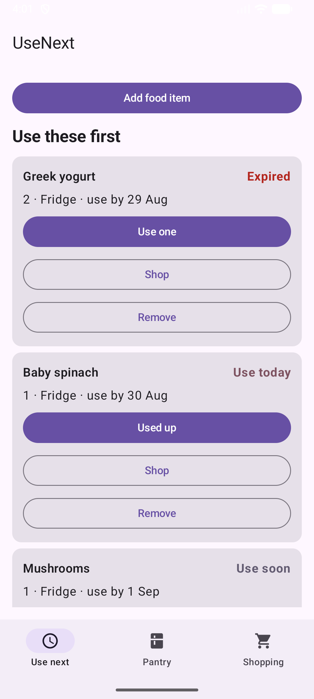
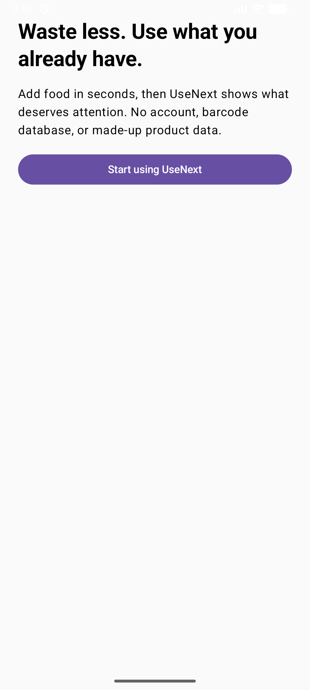
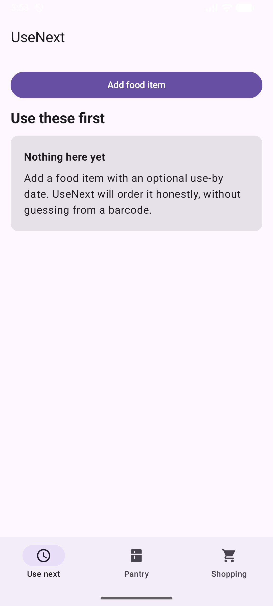
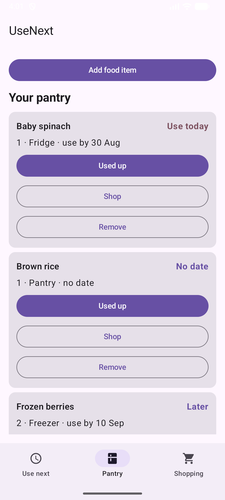
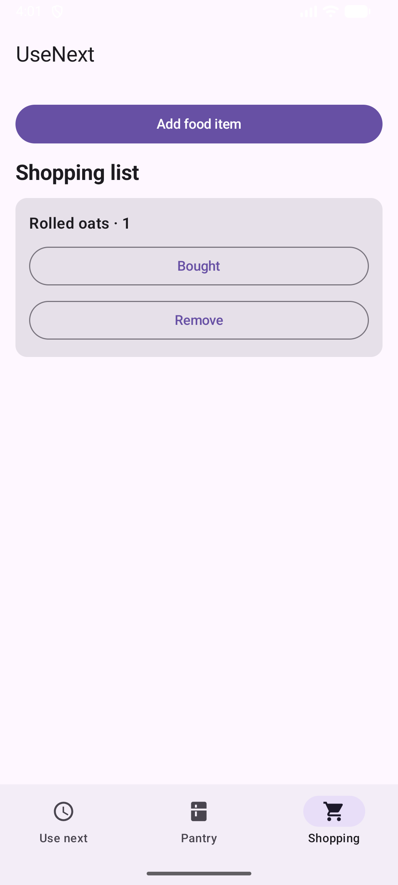
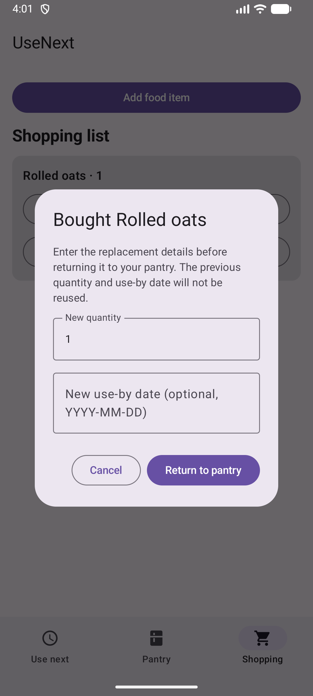

Attention, not administration
The “Use next” view surfaces dated food by urgency, while undated items remain honest: no date means no invented deadline.
A small Android app for the food already at home
UseNext helps busy households use food they already have first—without accounts, barcode scanning or a complicated inventory system.
Early debug build for private testing. It is not a Play Store release, there is no public APK link, and no payment is being collected.

Who it is for
“I know there’s food at home. I just forget what needs using first.”
For busy Australian households who want a quick memory aid—not a full stock-control system. You enter only the item, where it lives, quantity and an optional date.
The actual build · 27.6 seconds
Recorded from the current Android debug build. Playback is the supplied H.264 portrait capture.
Three practical benefits
The “Use next” view surfaces dated food by urgency, while undated items remain honest: no date means no invented deadline.
Use one, use it up, shop for a replacement or remove it directly from the item card.
No account, runtime permissions or internet access in the Android build. Its manually entered list stays on that phone.
Six real screenshots





Scope, without spin
The Android build stores the food list and onboarding state locally on the device. It has no account, backend, Internet permission, runtime permissions, ad SDK or analytics SDK.
This validation website has no account, form backend, payment system or visitor analytics at present, and our code sets no cookies. If you email, your message is handled by your email provider and Gmail.
Read the plain-language privacy summaryOne proposed price, not a checkout
Your answer helps decide whether this should become a proper release. It does not place an order.
Answer the price questionShort FAQ
No. There is no public APK. Request the private test build by email so the debug-build caveat and device fit can be explained.
No. UseNext records dates you enter and orders them; it does not provide food-safety advice. Follow packaging and official guidance.
No. The current build is deliberately manual and local to one phone.
No. Testing is free. A$4.99 is a proposed one-time price question for a possible future Play Store release.
Request the private Android beta by email. You will be asked about the problem, frequency, device and proposed price. No payment and no public download.
Request the free beta